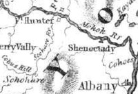

|
by Stefan Bielinski The term Fort Hunter generally refers to the land in old Albany County at the confluence of the Schoharie Creek and the Mohawk River. It was named for colonial governor Robert Hunter who authorized construction of an outpost there in 1711. At the same time, it meant and means different things to different people(s). Albany's relationship with the term stems from a provision in the city charter of 1686 which gave Albany the rights to 1,000 acres of land at Tionnderoge (or the place where the Schoharie flows into the Mohawk). The Albany tract probably was located south of the Mohawk! An Anglican chapel or mission was built there about 1712 and serviced by the clerics assigned to St. Peter's Anglican church in Albany. A large part of their salary came from the SPG - the misionary arm of the Church of England. The Albany city fathers began to explore the extent and potentials of the tract almost immediately. However, regional safety concerns precluded positive action for many years. During the three-decade-long period of peace (1713-44), Albany granted "titles" to lands in the Fort Hunter tract to a number of Albany notables. We believe that they were leases similar to those granted at Schaghticoke and within the core city. By that time, others (royal officials, William Johnson, and even the Mohawks - who owned the land in the first place) began to voice concerns regarding the propriety of Albany holding land out in the Mohawk Valley. Sir William in particular took the lead in seeking to vacate Albany's title. Albany finally lost its historically tenuous claim to the Fort Hunter tract with the creation of Montgomery County in 1784! The early Albany context for the history of that location will be discussed here in the future. In the meantime, this exposition should prove interesting! This profile as well! Society for the Propogation of the Gospel in Foreign Parts: See Wikipedia for basic background. More Fort Hunter focued material is found in Old New York Frontier One of the recipients was Abraham Cuyler, Jr. In 1763, Johnson described the situation for the Lords of Trade: "The Corporation of Albany likewise (a great many years ago) obtained an Indian Deed, by intoxicating their Chiefs, and other unfair measures as the Indians say, of the lands called, the Mohawk Flatts at Fort Hunter, whereupon they reside, and from whence they draw the greatest part of their subsistance; and altho' they have not as yet attempted to disposess the Indians, yet it is to be apprehended, whenever matters are thoroughly established, they will certainly do so, which gives the utmost discontent to the Indians." A letter dated November 13, 1763 and printed in NYCD, 8:577. first posted 4/5/01; last revised 4/13/04 |